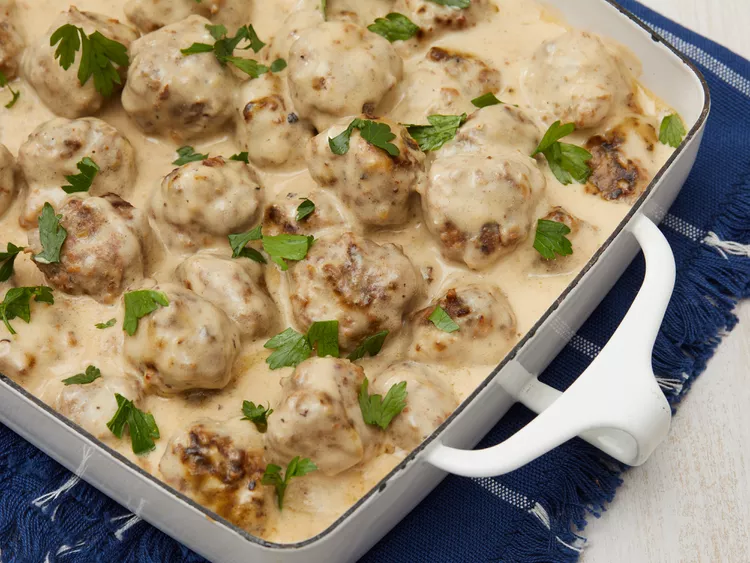

Swedish Meatballs

Description
Swedish meatballs are a classic dish consisting of small, savory meatballs made with a combination of ground beef and pork.
Ingredients(for 6 servings)
- 2 slices day-old white bread, crumbled
- ½ cup heavy cream
- 1 teaspoon butter
- 1 small onion, minced
- 2/3 pound ground beef
- 1/3 pound finely ground pork
- 1 egg
- 1 tablespoon brown sugar(Optional)
- 1 teaspoon salt
- 1/4 teaspoon ground black pepper
- 1/4 teaspoon ground nutmeg
- 1/4 teaspoon ground allspice
- 1/8 teaspoon ground ginger (Optional)
- 1 tablespoon butter
- 1/4 cup chicken broth
- 3 tablespoons all-purpose flour, or as needed
- 2 cups beef broth, or as needed
- 1/2 container sour cream
Steps
- Preheat the oven to 350 degrees F (175 degrees C)
- Place bread curmbs into small bowl; mix incream. Allow to stand until crumbs absorb cream, about 10 mins.
- Meanwhile, melt 1 teaspoon butter in a skillet over medium heat; cook and stir onion until light brown, about 10 mins. Transfer onion to a mixing bowl.
- Mix ground beef, ground pork, egg, brown sugar, salt, black pepper, nutmeg, allspice, and ginger with onion in the mixing bowl. lightly mix in bread crumbs and cream.
- Melt 1 tablespoon butter in a large skillet over medium heat. Pinch off about 1 1/2 tablespoon meat mixture per meatball; form into balls. Place meatballs into the skillet and cook, turning often, until browned, about 5 mins. Insides of meatballs will still be pink.
- Place browned meatballs into a baking dish, pour in chicken broth, and cover with foil.
- Bake in the preheated oven until meatballs are tender, about 40 mins. Remove meatballs to a serving dish.
- Pour pan drippings into a soucepan over medium heat. Whisk flour into drippings until smooth.
- Gradually whisk in enough beef broth to total about 2 1/2 cups liquid.
- Bring gravy to a simmer, whisking constantly, until thickend, about 5 mins.
- Just before serving, whisk in sour cream. Season with salt and black pepper. Serve gravy with meatballs.